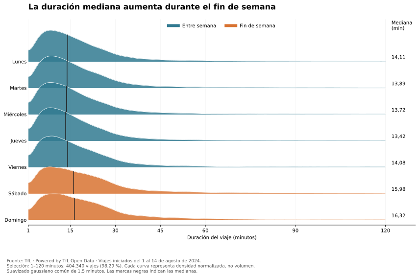

Volumen diario
El máximo se registra el 13 de agosto: 33.339 viajes. El mínimo corresponde al 4 de agosto, con 26.024.
Una barra representa los viajes iniciados ese día. Azul: entre semana. Naranja: fin de semana.
Abrir gráfico a tamaño completo1–14 de agosto de 2024 · Volumen, horarios, conexiones y duración.
Una mirada al uso registrado del servicio. Los viajes realizados no permiten medir la demanda que quedó sin atender.
El máximo se registra el 13 de agosto: 33.339 viajes. El mínimo corresponde al 4 de agosto, con 26.024.
Una barra representa los viajes iniciados ese día. Azul: entre semana. Naranja: fin de semana.
Abrir gráfico a tamaño completoEntre semana destacan las 8 y las 17 h. El fin de semana, la actividad se reparte más entre el mediodía y la tarde.
Viajes medios por día y franja horaria: 10 días entre semana y 4 de fin de semana.
Abrir gráfico a tamaño completoEl peso de los viajes internos aumenta 7,25 puntos porcentuales el fin de semana.
40,20 % dentro del mismo distrito
29.458,9 viajes localizados por día · Cobertura: 97,81 %
Explorar chord de entre semana47,45 % dentro del mismo distrito
27.126,5 viajes localizados por día · Cobertura: 98,47 %
Explorar chord de fin de semanaLas bandas representan relaciones entre origen y destino. Las que regresan al mismo sector representan viajes dentro del distrito, no necesariamente a la misma estación. Cada círculo muestra su propia distribución: utiliza los valores interactivos para comparar magnitudes absolutas. La agrupación territorial simplifica 794 estaciones localizadas; oculta diferencias entre estaciones del mismo distrito.
15,98 minutos el sábado y 16,32 el domingo, frente a medianas de entre 13,42 y 14,11 minutos de lunes a viernes.

404.340 viajes de entre 1 y 120 minutos: el 98,29 % del total. Curvas de densidad normalizadas, no cantidades de viajes. Las marcas verticales indican la mediana. Suavizado gaussiano de histogramas con ancho común de 1,5 minutos.
Abrir ridgeline a tamaño completoLas diferencias por horario, distrito y duración pueden orientar el estudio de la disponibilidad y la redistribución de bicicletas. No determinan cantidades de reposición ni cambios tarifarios: faltan datos de capacidad, inventario, movimientos operativos y respuesta de los usuarios.